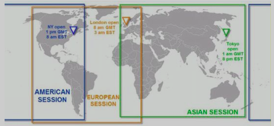

book-forex-trading
Table of Contents
Title. Forex Trading: The Basics Explained in Simple Terms
By Jim Brown
Plus free bonus trading system
Introduction
作者2002年开始从事货币交易。交易方式从传统的手工图标逐步转移到使用多屏数据图标以及自动化交易。
作者无偿分享了许多交易系统，并利用博客和论坛帮助新手。
这本书的目标读者是开始考虑进行外汇交易，但面对internet上的大量信息无法确定如何开始的那些人。
作者在本书中尽量使用简单直白的语言。
1. Welcome to the World of Forex Trading
What is Forex?
Forex: Foreign Exchange, also called currency trading, or just FX trading. Or referred to as Spot FX.
Trading currencies is a little different to trading shares or stocks, as currencies are traded against each other.
Why would I want to trade Forex?
Most people have heard about trading stokcs, maybe even futures and options.
[ME: Options 期权：refer to https://www.zhihu.com/question/19959819.]
It is only since the early 2000's that the retail Forex has opened up to the likes of you and I, where you can start trading with a very small deposit into a brokerage account. About 99.9% of all transactions are carried out online.
Why Forex?
- It is the most liquid market in the world that runs 24 hours a day for 5 1/2 days of the week. [ME: 流动性最强的市场！] – According to the Bank for International Settlements [ME: 国际结清算银行], in early 2014, Forex trading averages $5.3 trillion dollars a day, $220 billion per hour [ME: 日均53000亿美元，时均2200亿美元] <-> It would take 30 days of trading on the New York Exchange to equal one day of Forex trading. [ME: 纽约证交所日均交易量1700亿美元] –> Average traders have very good liquidity [ME: 流动性]: if you want to buy or sell any of the major currency pairs, there is never an issue of that pair not being available to trade.
- -> With this much volume on a daily basis, the average traders have absolutely zero chance of influencing market direction.
Advantages of Trading Forex
- The Forex market is running continuously for 24 hours during the week, there is very little gapping, which can be a common problem with stock trading. [ME: 很少跳空高开/低走，但不是没有 -> Don't be in open positions over the weekend! 周末不要持仓]
- There are only a small amount of currency pairs to choose from. A very small basket compared to the number of stock choices (thousands on the US stock exchanges). -> All of your efforts and concentration can be targeted in a very narrow field.
- Forex doesn't range much. When it breaks out it is normally something very good.
- The low cost of trading is also important. The cost is minimal for each trade as there is normally no commission involved, however, you do have to cover the spread. (Some paris now have less than one pip spread)
- Further to the low cost, you can open an account with a broker with a very small amount, and in some cases, just a couple of hundred dollers.
Some Further Advantages of Forex Trading
- Most brokers offer unlimited demonstration platforms where you can practice trading for as long as you like without risking any of your own money. -> Demo trading, which is brilliant if you want to try out different trading methods and ideas.
- Forex data is live and it is free: your Forex data is all freely provided to you by your chosen broker's trading platform.
Note: trading on a 'demo' account is nothing like trading on a 'live' account as there is zero risk with a 'demo' account and therefore your emotions do not come into play at all. -> When there is real money on the line, you will think and act different!
When is the Forex Market Open?
Forex trading does not have any central exchange (compared to trading stocks). All trading is done through the banks or market makers, which are basically the brokers that traders like you and I would use.
Forex trading follows the world's time zones and is broken down into three major time zones:

- Asia session is the first to open: New Zealand, Australia, Singapore, Japan etc. It is normally the quietest of the session with regards to trading volume.
- This is followed by the European session. In the meantime, traders in the Middle East are kicking in, and then all the major European centres, where eventually London opens. This is the main session as it normally has the greatest volume traded. – London is the financial capital of the world, even though most people think it is Wall Street in the US.
- The last session to open is the US session, and this session can also be very frantic, especially early in the day where there can at times, be major news releases that have a big effect on the US dollar itself.
There are no set times, just when banks open for business in each major financial city and volume picks up.
[ME: Trading begins every Sunday during the Asian session at 5:00 PM ET and ends on Friday at 4:00 PM ET. (Refer to Forex Trading Hours and Market Sessions) – 北京时间每周一早上6点到周六早上5点（Refer to http://www.timebie.com/cn/easternbeijing.php）]
Every time zone has its advantanges and disadvantages.
There are plenty of free online time zone clocks available that relate to the different session times, so it is quite easy to find a session or sessions that suit your lifestyle. You can also find free custom indicators that clearly put the different session times on your trading charts. – A great visual tool! [ME: find one or develop one!]
2. What Do We Trade in the Forex Market?
The majority of traders just stick with a group of about 8 to 10 pairs.
The majors: the most heavily traded currency pairs, and a lot of traders are just happy trading one or two of these.
- EUR/USD: Euro dollar against the US dollar -> Euro
- USD/JPY: Japanese Yen -> Yen
- GBP/USD: Great Britain pound -> Pound (or Cable)
- USD/CHF: Swiss franc -> Swissy
The second tier pairs:
- AUD/USD: Australian dollar -> Aussie
- USD/CAD: Canadian dollar -> Loonie (The term actually comes from the first Canadian dollar coin)
- NZD/USD: New Zealand dollar -> Kiwi
The 'crosses': these involves non US dollar pairs. Some of the more popular crosses:
- EUR/JPY
- GBP/JPY
- EUR/GBP
These three are the most popular traded.
What do all the numbers mean when the currency pairs are traded together?
The first currency: the 'base' currency, it is being compared to the 2nd currency, which is called either the 'quote currency' or the 'counter currency'. [ME: EUR/USD, EUR - base, USD - quote]
Quote: for example, AUD/USD: 0.7125/0.7128, this shows how many units of the quote/counter currency are needed to buy one unit of the base currency -> US$ 0.7125 is equal to AU$ 1.00.
Forex Pairs - What do the Numbers Mean?
For example, AUD/USD: 0.7125/0.7128
- bid price (0.7125) / ask price (0.7128)
- spread: the difference between these two figures -> 0.7128 - 0.7125 = 3 pips
- buy base currency: pay the ask price -> buy 1 AU$, pay 0.7128 US$
- sell base currency: get the bid price -> sell 1 AU$, get 0.7125 US$
[p17] [ME: 通过监测 broker 的 spread 变动预测市场波动，并随之调整止盈止损点？]